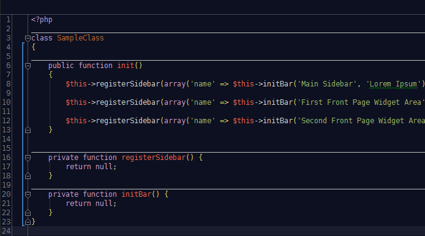

Pastell theme for PhpStorm
View the Project on GitHub gergelykralik/phpstorm-theme-pastell

Right Click -> Save As
PHPStorm version 7.x
~/.WebIde70/config/colors
~/Library/Preferences/WebIde70/colors/
C:/Users/USERNAME/.WebIde70/config/colors
PHPStorm version 8.x
~/.WebIde80/config/colors
~/Library/Preferences/WebIde80/colors/
C:/Users/USERNAME/.WebIde80/config/colors
File -> Settings -> Editor -> Colors & Fonts
Pastell and click OK